University Final Year Project - Development Blog
Over the course of the final year in my Games Design degree, I've developed a 3D platformer game prototype.
As a solo project, I've had to work in many areas like UI, Asset Development, Animation etc.
However, the focus of the project from the start has been on the roles of Design and Scripting,
so for my blog I'll mostly only be covering those elements.
I've broken things up into a few main topics, which you can skip around to from here:
PSX-inspired Rendering in Unreal
For this project, I had the specific goal of wanting to recreate a visual style inspired by early 3D games of the PS1 era. Of particular inspiration were platformers like Spyro The Dragon or Crash Bandicoot.


However, in modern game engines like Unreal or Unity, this isn’t a straightforward task.
Modern rendering pipelines have changed drastically from the ones used by games on 6th generation consoles,
meaning that certain desired visual artifacts are either not available as built-in options or require faking with post-process effects.
Unreal Engine in particular also comes with a vast array of advanced rendering features enabled by default (Temporal Anti-Aliasing, Lumen, Nanite etc.)
that are either unnecessary or would interfere with this kind of visual style.
After researching the rendering techniques used in these old games,
I decided on the following list of effects that I felt were core to the visual style I wanted to create:
- Lowered Screen Resolution
- Gouraud Shading
- Nearest-Neighbour Texture Filtering
- Vertex Quantization
- Dithering
- Vertex Coloring
For this blog, I'll go over the effects that involved extra research or more complicated solutions to implement.
Lowered Screen Resolution
Achieving the desired screen resolution was relatively simple, especially thanks to a tweet from Antonio Freyre highlighting some relevant console commands. In my own project, I more or less used the same technique in a GameInstance subclass, reducing the game’s resolution to a target of 960x540.Most PS1 games were designed for 4:3 TV screens, and usually had a resolution of 320 x 240. I initially experimented with something closer to this at 640 x 360. However, many of the player character’s details became heavily distorted or illegible at this resolution, so I decided against it. In the end I personally felt that 960 x 540 kept a nice compromise between readability and the desired visual style.
Gouraud Shading
Most early 3D games used a shading model referred to as Gouraud Shading. In this model, lighting values are calculated on a per-vertex basis, and interpolated along each triangle. This differs from Phong Shading, used by most contemporary games, where lighting values are calculated more accurately per-pixel.
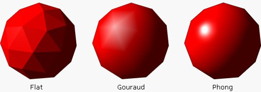
As of developing this project in Unreal Engine 5.3, there is currently no built-in support for Gouraud shading available in the engine.
Instead, I had to implement my own custom lighting system.
This lighting system consists of a “Vertex Light Manager” Actor, along with Actor blueprints representing Point and Spot lights.
The Vertex Light Manager stores the data for the scene’s main directional light source, including its direction,
light colour, strength, and the level of ambient light. These values are passed to a Material Parameter Collection,
which is used in a master material to calculate lighting at each vertex.
All of the game’s materials are using the “Unlit” shading model, as we’re calculating all of the lighting ourselves.

This effectively gives us Gouraud shading, but it only allows for one directional light source in the scene.
I wanted to find a way to support a large number of Point / Spot lights in a given scene, but Material Parameters don’t allow for arrays.
The solution I found was to have the Vertex Light Manager write the light data for every light in the scene to a Render Texture,
where each row of pixels stores the data for one light. In my case, I use the first pixel’s RGB values to store data like the light's Radius and Strength,
the second pixel for location, and the third for colour.
Then, in a Material Function, I created a custom HLSL node that iterates over each row of the Render Texture to
calculate the influence each light has on a given vertex. This accumulated light is then added to the directional light's value.


The Render Texture is drawn to every tick, so effectively this allows every light to be dynamic as well.
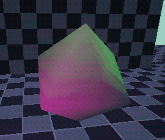
This was a really fun problem to figure out, I'd be interested in delving more into materials in the future. I haven't encountered any performance issues with this setup at all, but I'd like to learn more about potential shader optimizations etc.
Vertex Quantization
A rendering artifact specific to the PS1 was Vertex Quantization. Due to the way the console’s hardware handled floating point values, once vertices were converted to screen-space, their coordinates were converted to integer values, losing some precision. This had the effect of vertices “snapping” between pixels as they moved relative to the camera, giving a bubbling or jittery effect to objects.
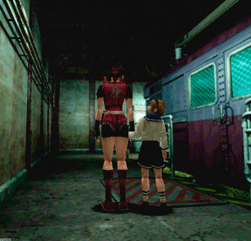
You can achieve a close approximation of this effect in Unreal simply enough using the World Position Offset in the material editor.
Getting the vertex’s world position and rounding to a particular unit distance, then subtracting the original world position to get the offset.
This method will cause models to jitter / boil as they move, but not as the camera moves. We can fix this
by setting the world position node to be camera relative, but there’s still a larger inaccuracy.
The further away a vertex is from the camera, the less noticeable the effect will be, and conversely,
the distortion becomes more extreme close to the camera. This is essentially the opposite of how the effect appears on actual PS1 titles.
To more accurately recreate this effect, I did some research on how to convert vertices to screen-space,
round their coordinates to the nearest pixel, and convert back to their world space location.
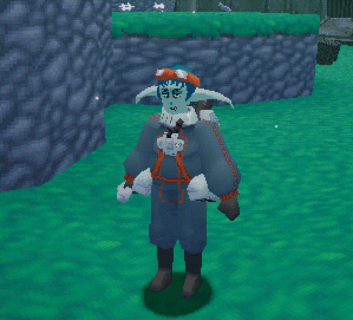
Vertex Colouring
Since the game’s custom lighting system doesn’t have any actual shadow casting, I looked at a technique used in early 3D games to fake the effect for darker areas using vertex colouring.


Essentially, colours can be painted manually at each vertex on a mesh. This way, I could manually
darken parts of the level that light wouldn’t naturally reach, or to mimic ambient occlusion.
While this works great for static objects, it also creates a problem when the player character moves through these areas,
as their lighting no longer appears to match the environment.
To solve this, I was inspired by a lighting technique used in the first Kingdom Hearts game, which
would change the tint applied to characters when they entered certain lighting “volumes”.
For my project, I created a component that traces to the floor directly beneath its actor, and gets
the vertex colour value at that point of the mesh. It then applies this value to a “Tint” colour parameter in its actor’s material instance.
Implementing this feature also involved some C++, as the functions required to get the vertex colour at a given point on a mesh aren’t exposed to blueprints.
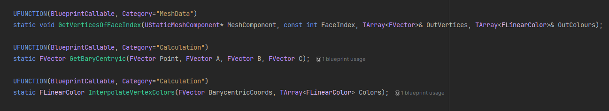
Since the line trace function in blueprints returns the face index hit, I use this to get the triangle’s 3 vertices
and their associated colours. Then, we can calculate the Barycentric coordinates of the line trace’s hit,
and use those coordinates to interpolate between the 3 vertex colours.
Here you can see the results:
Similar to the Kingdom Hearts example, the component is only activated when its owner is within a lighting volume, which also specifies a multiplier value to control the tint’s influence. Unfortunately, shortly before my project's deadline I encountered a severe error related to this effect, so I had to disable it for the submitted build.
Platformer Movement Development
On many previous projects I had found that over time, the player character blueprint would become extremely bloated
with the amount of variables and nodes handling various abilities. Handling player state also tended to become a
problem, where the logic for every ability essentially had to manually check for and interrupt the effects of other abilities.
For example, using a delay node as part of an ability’s logic usually required an immediate follow-up check that any
other abilities hadn’t been activated during the delay.
With this project, I knew going in that the player character was going to have a large amount of platforming abilities
and potential states, so I wanted to find a better way of handling this.
Initially I did some research into Unreal’s Gameplay Ability System, which among other features would allow
each ability’s logic to be encapsulated in its own blueprint. However, the setup required to implement this system
is initially quite time-consuming with a lot of boiler-plate code. Many of the features were also overkill for my project,
especially those relating to Gameplay Attributes or Networking. Taking the scope of the project and the time I had to
work with into account, I ultimately decided to implement a simpler system that covered the game’s needs.
Player Action Component
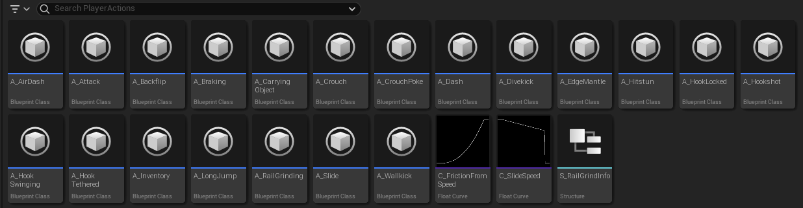
Each of the player character’s various abilities and movement states have their logic implemented in individual Action blueprints. These blueprints provide 3 overridable events:
- Start Action: Called once as the ability or state is activated
- Action Tick: Executed every game tick
- Stop Action: Called once as the ability or state ends or is replaced by another. Allows for resetting any movement variables and general cleanup
A single component in the player character blueprint, the Player Action Component, manages the current active Action blueprint. Only one Action can be active at a time, so the component will call the Stop Action event on the current Action when it receives a new one.
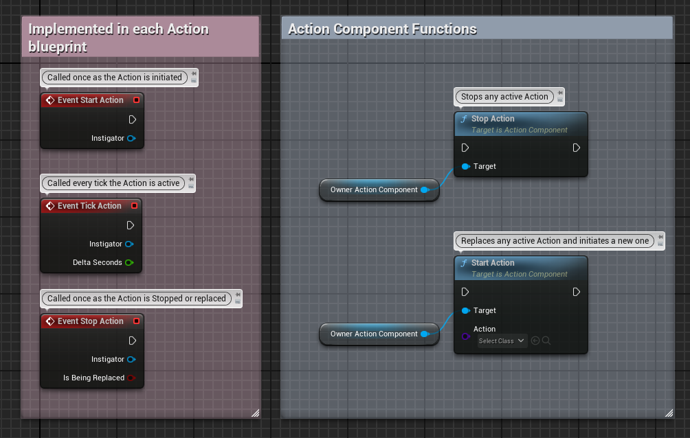
As I developed the project further, I ended up making some additions to the system. In a few situations
I realized it would be useful for Actions to be able to handle events like input, so I added an overridable
“Action Event” event (which I could probably have named better). This allows for unique events to be passed
to the Action Component via a GameplayTag, which individual Actions can choose what to do with.
I was also inspired by Tom Looman’s use of Gameplay Tags in his own version of this kind of system,
using them to allow Actions to essentially “block” other Actions associated with particular tags.
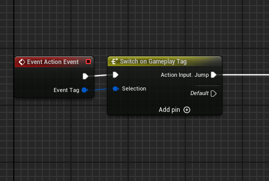
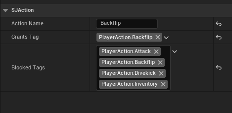
One issue I encountered with this system was that any latent action nodes (e.g. Delay Nodes) used in an Action blueprint would continue to execute even after the Action had “ended”. Since each Action was a UObject, they will continue to exist even when not referenced for a while until being garbage collected. Fortunately, I was able to find a very straightforward solution to this by calling the LatentActionManager’s RemoveActionsForObject function on an Action object after Stop Action has been called on it.
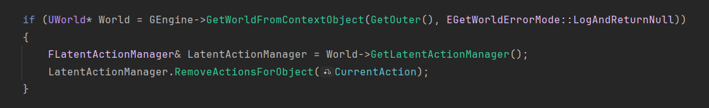
With this, delay nodes can be safely used in ability logic without worrying about interfering with other Actions.
Overally, I’ve been really pleased with how this system turned out, as once I had set it up I found
I was able to prototype new abilities for the player character much faster and with far less bugs.
It was also a good opportunity to continue learning more about using C++ with Unreal, and I’d like
to try expanding on it in the future.
Movement Iteration
For designing the movement abilities themselves, my main goal was to give the player a wide array of
traversal options that could be smoothly chained into one-another. I also wanted a central mechanic
that would feel unique to build traversal and interaction options around.
I'd played a lot of platforming games that gave the player some form of a "Wall jump" ability, allowing
them to propel off in the opposite direction of a surface. I think these sorts of abilities are really
interesting in platformers, as they change the player's relationship with the level environment.
In this case, walls which were once only barriers are now a potential spring board to another platform.
I wanted to find a core movement ability that was transformative in this sort of way.
In the end I don't think I was too creative, as I essentially just decided it might be interesting if
players had an ability that pulled them towards walls instead. With the theming of the game being
based around gathering and salvaging scrap parts, I decided on implementing this as a "hook-shot" ability.
Obviously this sort of grapple hook mechanic is extremely common in games, but I had several problems I wanted to avoid:
- The ability shouldn't trivialize the rest of the platforming. For example, the hook probably shouldn't just let the player pull themselves all the way to their target. This implementation works in a lot of games (particularly with first-person aiming), but here I wanted the player to think more about combining different abilities together as they traverse.
- The ability shouldn't be scripted. In games like Ratchet & Clank, usage of the grapple hook is limited to pre-determined "anchors" in each level. You can only use the hook in specific sections the designers intended, which is fine for breaking up the usual running and gunning gameplay in a linear sequence. However, with this project's core goals in mind, I wanted to make sure most abilities can be used in any context. They might not always be suitable or useful, but I wanted players to have to figure that out themselves.
Eventually, I settled on the idea of pushing the player towards the hit surface and giving them a
small boost in the air, rather than them travelling the whole way.
This general functionality stayed mostly the same throughout development, but there was a lot of fine-tuning involved.
After a few early playtests, I adjusted the ability’s maximum reach and ended up increasing the speed a lot,
as players usually found their target to be just out of reach.
One issue that persisted throughout much of development was with aiming the ability. To start with,
it was very hard for players to aim precisely with the directional input, as even small changes in
angle would move the hook's destination quite a bit. With no visual indicator of where the hook would travel to,
it was also very difficult to judge when to use it when platforming.
To fix this, I increased the hook's hitbox considerably for items and interactable objects to give it a
slightly "magnetic" effect to compensate for player aim. I also added a target indicator to show what
surface the hook would hit if used. These changes helped, but players continued to struggle with the ability when platforming.
The most common problem was when players would attempt to pull themselves towards a ledge, as they would often
use the ability too early or late and fire the hook just above the ledge.
I ended up creating an "auto-aim" component that would check if the hookshot was going to miss before
being fired, and attempt to snap its target to a surface within a certain distance or angle. This seemed
to mostly alleviate the issue, making the ability more forgiving to use.
Item Salvaging System & Contraption System
Compared to the platforming mechanics, the design and ideas for these systems changed considerably throughout development.
Both started with the same core goal as platforming, to give the player more options for how they navigate levels.
I wanted to experiment with achieving this through platforming collectibles. Instead of just having them be rewards to collect,
what if they had an alternative use? In this case, the player would have a choice between salvaging and selling collectibles for
money, or repurposing them into crafted tools to help navigate the level.
For the initial design of how item salvaging would work, I started with a few key design choices:
- No player inventory - Anticipating that excessive menu interfaces might conflict with platformer gameplay, I decided that items should be held only one at a time.
- In-world Crafting - Similarly, crafting would be done in the world itself rather than in menus, by placing item reagents next to each other.
- Retrieval pod - To reduce backtracking to the player ship when retrieving items, the player should have access to a portable retrieval pod.
- Item Carrying - While carrying items, your platforming movement should change or be limited, changing the way the player has to navigate the level.
However, many of these original design decisions would either change or eventually be entirely reversed later in development.
First Iteration
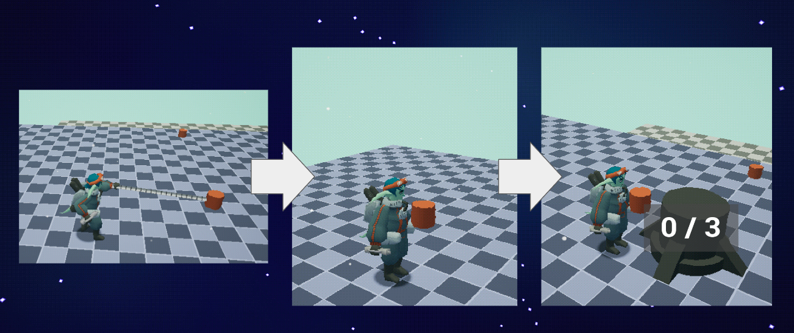
- Felt the need to call down the retrieval pod for every item, repetitive
- Quickly found the timer mechanic to be conflicting with exploration goal, and didn't feel fun.
Inventory Iteration
- Changed approach, player is now mostly collecting smaller items that can be held in inventory.
- Still limited size, keeping the need for the retrieval pod
- Keep the planned "puzzle" element of retrieving items via heavy items
- Introduced some complications
- Player might send items to ship, then later realize they needed them to craft something
- Makes it difficult to design challenges that require crafting or items, can never guarantee the player hasn't sent items away
- Players struggled to understand why they should use the pod / didn't understand how to deposit and send it back.
- Designing a way to retrieve items back from ship:
- Feels convoluted and clunky
- Majority of gameplay now consists of inventory management
- Not fun
- Decided to simplify
Final Iteration
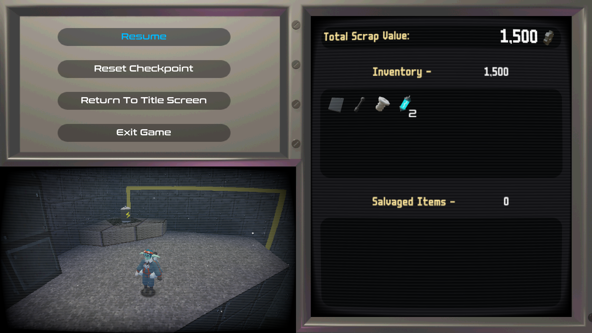
The regular items the player collects are now added to an infinite inventory and cannot be equipped. The retrieval pod is no longer used to salvage these items, and their value is totalled automatically at the end of the level. This clears up a lot of the inventory management from before and ensures players don't encounter a situation where an item they need has been sent back to the ship.
The retrieval pod is now exclusively used for salvaging larger items, and the interface has likewise been simplified again. I still decided to add a small prompt window asking for confirmation when sending the pod away, as in the earlier versions players had often done so accidentally.
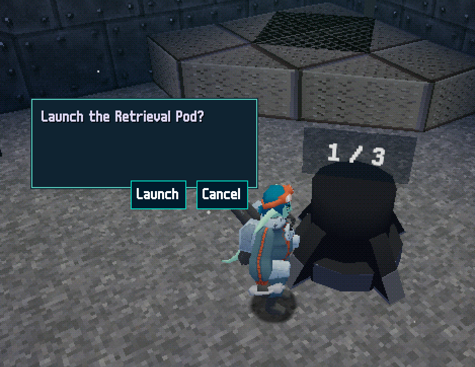
End Of Project Reflection
I've been overall happy with the work I was able to get done for this project, and the things I've learned from a technical perspective. Feels like the culmination of everything I've learned in the last four years across multiple disciplines. I feel like I've managed to achieve a much higher level of quality and polish than my previous projects, despite falling into similar issues with regards to scope.
Most of my own problems with the project and the resulting prototype are more on the design side of things. As development progressed, I ended up feeling disillusioned with a lot of the original design decisions I had made early on. Many of these ideas had been too vague or not fully defined, and I feel like I had placed too much emphasis on giving the player as many options as possible. In retrospect, some of the design aspirations I had were approaching immersive-sim levels of mechanical density, and as a result I had definitely started to overscope in terms of planned features.
An approach I wish I had taken instead, and one I tried to shift towards later in development, would've been to design one or a small number of core mechanics and design things around those. Focusing on adding more and more mechanics and systems for so long meant that it took very late into development before I'd actually started designing platforming challenges that were any fun.
I was also a bit disappointed that I only ended up developing the first level for the game, compared to my original plan for 3. Again, I think the problem here was having underestimated the difficulty of designing challenges / levels with so many mechanics to consider. In the level I did develop, almost the entire layout had to be designed around tutorialization. I somewhat feel like my level-design skills let down the core goal I had of player freedom, as the approach I took for teaching mechanics didn't leave much room for options / multiple routes.
Despite the regrets, I do still feel like this was a useful experience. Even though it was a long process to find the fun, I'm far happier with this version of the game than what it was originally trying to be.
If I return to this project in the future, I'd definitely want to take some time to rethink and redesign the overall structure. I'd like to think about ways of incorporating more of a feeling of "progression", whether it'd be unlocking platforming abilities or types of contraptions to craft. There might also be different approaches to level design where the contraptions would be a better fit, potentially something more Metroidvania inspired.
Future role:
- Think I've showcased a well-rounded skill-set, doing a bit of everything for a whole game prototype
- At the same time, I do worry that it might've been better to focus entirely on one area.
- I'm most confident in my technical skills and knowledge with Unreal, and my ability to problem-solve and research areas I'm unfamiliar with.
- I think I've learned a lot about design here, but it's a skill I'd like to improve on.
- Based on the work I've done and what I'm interested in, I think I'd like to focus on developing my skills towards a role of Technical Designer or Technical Artist.